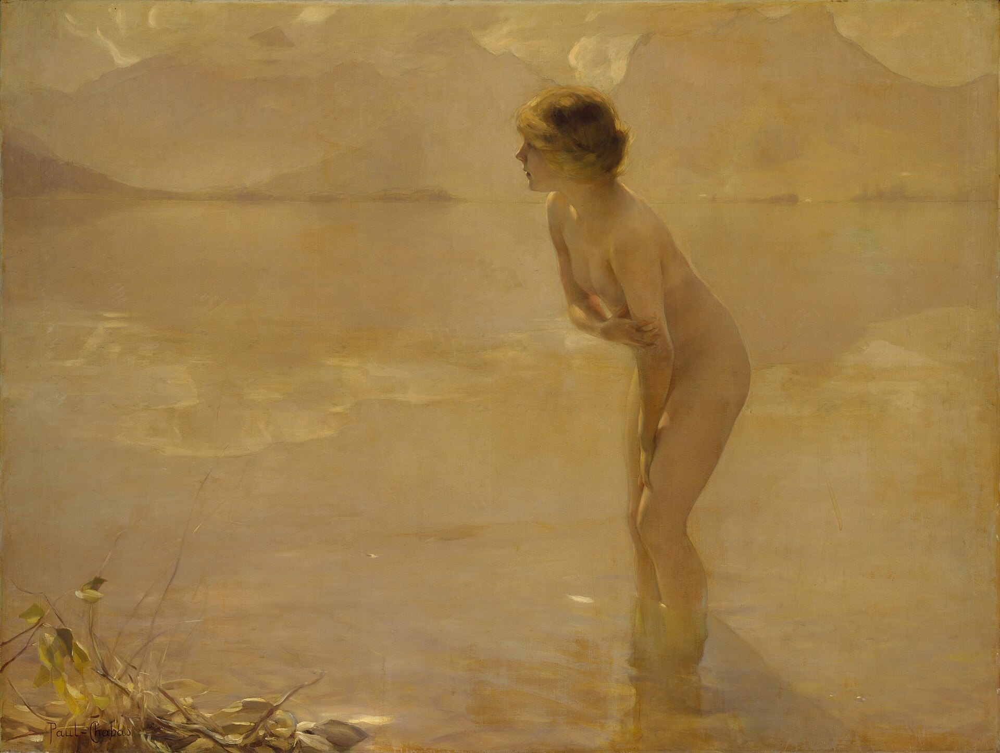
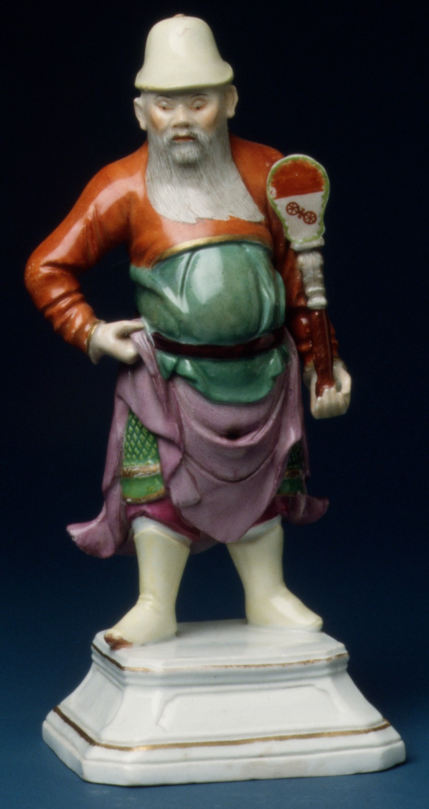

第 10 章
玻璃柜里的佛
纽约大都会艺术博物馆二楼东南翼，亚洲艺术展厅的灯光在每天上午十点准时亮起。不是一下子全亮——那太粗暴了——而是从天花板的主灯开始，然后是展柜内部的射灯，最后是壁画的侧光，一层一层亮起来，像是有人在慢慢拉开一道看不见的帷幕。负责开灯的是展厅管理员，他在这间展厅工作了十七年，闭着眼睛都能找到每一个开关的位置。
他不看佛像。不是不感兴趣，而是习惯了。十七年里，他每天看着这些石头的面孔，已经不再觉得它们有什么特别。


206号展厅在导览图上被标记为“中国佛教艺术，五至十三世纪”。这个命名本身就是一次判断。它没有说“中国佛教造像”或“中国佛教文物”，而是说“中国佛教艺术”。“艺术”这个词划定了参观者应该采取的观看方式——不是礼拜，不是考古，不是历史考证，而是审美。审美是一种特殊的注意力状态：它要求观看者将注意力集中在形式、比例、材质和风格上，同时悬置对其他问题的关心。
这件东西从哪里来，怎么来的，经过谁的手，原来的功能是什么——这些问题在审美状态下被暂时搁置。不是被否定，只是被搁置。
展厅中央的菩萨立像来自天龙山石窟。北齐，砂岩，高一百七十三厘米。右臂从肘部残缺，左臂完整，手指轻拈衣带。衣纹从肩头垂到脚踝，在脚边堆叠成几道弧线。菩萨的面部保存得极好——眉弓平缓，眼睑低垂，嘴唇微抿。
它的表情很难描述。不是微笑，不是严肃，不是悲悯，而是一种介于所有这些之间的状态。
二十世纪的西方策展人喜欢用“serene”这个词来形容这种表情。“Serene”在英文里有一种安详、宁静、不受干扰的意味。这个词选得很准确，但它同时也是一种遮蔽。“Serene”让人忘记这尊菩萨经历过什么——它被人从洞窟里凿下来，装进木箱，运上轮船，在海关文件上被描述为“石材工艺品”，在古董商的账本上被标注为“一件大型石雕”，最后才在博物馆的展厅里重新变成一尊“菩萨”。标签嵌在展柜底部的金属槽里，米白色卡纸，黑色字体。五行字：菩萨立像。
中国，山西省，天龙山石窟。北齐（550-577）。砂岩。罗杰斯基金，1925年。五行字提供了一种经过筛选的知识。年代和材质指向艺术史的分类体系，出土地点指向地理归属，入藏途径指向收藏的合法性。被省略的是那些更复杂的信息：这尊菩萨原来在天龙山哪一座洞窟，它在洞窟里的位置是什么，它和其他造像的关系如何，它被凿下时是否造成损坏，它经过哪些人的手才抵达纽约。
这些信息不是不存在。它们存在于博物馆的档案里，存在于旧照片和考古报告里，存在于1920年代北平古董商的通信里。但它们不在标签上。标签的空间有限，策展人必须在五行文字之内完成对一件文物的定义。他们选择了他们认为最重要的信息。这种选择本身就是一种判断。
展厅东侧的独立展柜里是一尊来自响堂山石窟的北齐佛首。砂岩，比真人略大，表面有风化痕迹。佛首的面部特征和天龙山菩萨相似——低垂的眼睑、微抿的嘴唇、平缓的眉弓——但体量更大，表情更庄严。展柜的玻璃是低反射的，从正面看几乎感觉不到玻璃的存在。
佛首被安放在深灰色的底座上，底座的高度使得佛首的面部与参观者的视线持平。灯光从上方和两侧同时打过来，消除了大部分阴影，让每一个细节都清晰可见。额头的白毫相是一个小小的圆形凸起，鼻梁的弧度从侧面看几乎是一条直线，嘴唇的轮廓在嘴角处微微上扬，耳垂的长度几乎垂到下颌线以下。
这些细节在原来的洞窟里是很难看清的。响堂山的洞窟光线昏暗，佛首的位置通常很高，信众只能从下方仰望，看到的是下巴和鼻孔，而不是眼睑和嘴唇。博物馆的灯光改变了观看的角度和距离。它让佛首从“仰视的对象”变成了“平视的对象”，从“礼拜的圣物”变成了“欣赏的艺术品”。
标签上写着：佛首。中国，河北省，响堂山石窟。北齐（550-577）。砂岩。约翰逊收藏，1921年。“约翰逊收藏”这四个字背后是一段错综复杂的交易链条。约翰逊是一位美国收藏家，1910年代至1920年代活跃于中国古董市场。他本人从未去过响堂山。他是在北平的一间古董店里看到这尊佛首的。
卖给他的人是卢芹斋——那个在巴黎第八区库尔塞勒街四十八号开店的浙江人，那个在二十世纪初期将大量中国佛教造像运往欧美的古董商。卢芹斋告诉约翰逊，这尊佛首来自响堂山石窟，年代是北齐。约翰逊相信了。他把佛首运回纽约，在自己的私人画廊里展出了几年，然后捐赠给了大都会博物馆。捐赠时他提供了一份来源说明，上面写着“购自北平古董商C.T. Loo”。没有洞窟编号，没有凿下时间，没有运输方式。
这份来源说明被收入博物馆的档案，后来当研究者试图追溯佛首的原境时，发现档案中的信息极其有限。
响堂山石窟共有十六座洞窟，北齐时期开凿的主要是南响堂的七座和北响堂的九座。每座洞窟都有多尊造像，佛首与佛身的关系需要通过风格比对、尺寸测量和旧照片对照来确定。但旧照片的数量有限。最早的系统拍摄是1920年代日本学者做的，那时许多佛首已经被凿走。研究者只能根据佛首的风格特征来推断它可能来自哪座洞窟。
衣纹的处理方式、面部的比例、发髻的样式——这些特征可以提供线索，但不足以确定具体的位置。一尊佛首和它原来的身体之间，隔着将近一个世纪的分离。身体还在响堂山的洞窟里，头在纽约的玻璃柜里。两者之间的距离不是地理的，而是信息的。没有人确切地知道这尊佛首属于哪一尊佛像。这个知识在1920年代的某个时刻丢失了——也许是在佛首被凿下的那一刻，也许是在它被装进木箱运出河北的那一刻，也许是在卢芹斋的店铺里被重新编号的那一刻。
这种来源信息的缺失并非孤例。在大都会博物馆的亚洲艺术展厅，许多来自中国的佛教造像都带有类似的模糊来源。有些标签上写着“购自某某收藏”，有些写着“某某基金捐赠”，有些只写“来源不明”。
这种模糊化处理在二十世纪初期是常态。当时的策展人和捐赠人并不认为详细的来源记录是必要的。他们关心的是文物的年代、风格和艺术价值，而不是它离开原境的具体过程。一尊佛首的年代是北齐还是隋代，这是一个重要的学术问题。
一尊佛首是从响堂山哪一座洞窟凿下来的，这是一个次要的——甚至不被认为是学术的——问题。这种关注点的偏差，后来成为来源研究的主要障碍。当二十一世纪的学者试图为这些佛首寻找原境时，他们面对的是一百年前留下的信息空白。那些被省略的细节无法被恢复。它们消失了，和那些被凿碎的石头碎屑一起，留在了响堂山的山坡上。
展厅西侧的墙上嵌着几块壁画残片，来自新疆柏孜克里克千佛洞。这些残片被安装在特制的展板上，表面覆盖着低反射玻璃。壁画的颜色已经褪去大半，但轮廓仍然清晰。一块残片上画的是一位供养人的侧影，衣纹流畅，手持莲花，背后是赭红色的背景。供养人的面部被部分损毁，只剩下额头和下巴的轮廓。另一块残片上是一组佛像的局部，只能看到几只手印和衣纹的褶皱。
标签上写着：供养人像壁画残片。中国，新疆，柏孜克里克千佛洞。九至十世纪。矿物颜料。格伦威德尔考察队，1905年。“格伦威德尔考察队”这几个字提供的是一种体面的学术外衣。
它让人以为这是一次正规的考古发掘，有完整的记录和合法的出口许可。但实际情况要复杂得多。
德国吐鲁番考察队先后三次前往柏孜克里克。第一次由格伦威德尔带队，时间是1902年11月至1903年3月。格伦威德尔是一位严谨的学者，他坚持只做测绘和拍照，不移动任何文物。他在报告中写道，壁画的保护状况已经很差，但切割会进一步损坏它们。他反对切割。
第二次考察由勒柯克带队，时间是1904年11月至1905年12月。勒柯克不像格伦威德尔那样谨慎。他认为壁画如果不切下来，迟早会毁于风化和人为破坏。他组织工人用狐尾锯将壁画从墙上切下来，装箱运往柏林。1905年12月，格伦威德尔在喀什噶尔与勒柯克会合，得知切割之事，在报告中表达了强烈不满，但木已成舟。
那些被切下来的壁画入藏柏林民族博物馆，后来在二战期间遭受轰炸，部分被毁。幸存的部分在战后被分散到不同的机构。大都会博物馆的这几块残片，是1960年代从一位私人收藏家手中购得的。收藏家说他是在1950年代的欧洲艺术市场上买到这些残片的，但不记得卖家的名字。标签上没有写这些细节。
它只写了出土地点、年代和最初的考察队名称。“格伦威德尔考察队”这个名称抹去了格伦威德尔本人对切割的反对，也抹去了勒柯克在切割中的主导作用。它把一次充满争议的文物掠夺行为，包装成一个中性的学术事件。参观者看到这几个字时，不会想到狐尾锯，不会想到格伦威德尔和勒柯克之间的分歧，不会想到二战期间柏林遭受的轰炸。他们只会想到一次遥远的、有组织的学术考察。
就在格伦威德尔与勒柯克会合的同一个月，英国探险家斯坦因开始了他对柏孜克里克千佛洞的考察。他比勒柯克更“系统”——用他自己的话说，是对至少60个洞窟的壁画进行“系统性”的搬走。到1915年2月，斯坦因从柏孜克里克等地“收获”的140余箱壁画和其他文物随他离开了吐鲁番，这些壁画和文物现主要藏于印度新德里国立博物馆和英国大英博物馆。
这就是标签的力量。它用几个字就完成了一次历史的改写。这种改写不是谎言。标签上的每一个字都是真的——这些残片确实来自柏孜克里克，确实是九至十世纪，确实是矿物颜料，确实与格伦威德尔考察队有关。但真实不等于完整。标签提供的是一种被筛选过的真实，一种被修剪过的真实，一种只保留了学术框架而删除了暴力过程的真实。这种真实的制造过程，就是博物馆意义再生产的核心机制。展厅的布局强化了这种机制。
206展厅的展品大致按照年代顺序排列，从入口处的北魏造像碑开始，经过北齐的天龙山菩萨和响堂山佛首，到唐代的鎏金铜佛，再到宋代的木雕观音。这是一条清晰的艺术史叙事线索——从“古朴”到“典雅”再到“饱满”，中国佛教艺术经历了一个可以辨认的风格演变过程。
这个叙事本身没有错。北魏的造像确实比唐代的更方正，唐代的确实比北魏的更圆润。问题不在于叙事的对错，而在于叙事的选择性。当参观者按照年代顺序观看这些展品时，他们看到的是风格的演变，而不是文物的流散。他们看到的是中国佛教艺术的发展史，而不是这些具体物品的旅行史。展厅的布局将注意力引导到风格上，同时将来源问题推到背景中。
这种引导在展厅的空间配置上表现得更加明显。206展厅的东侧是印度和东南亚艺术展厅，西侧是日本艺术展厅。参观者从中国展厅走到印度展厅，会看到一尊笈多时期的佛陀立像，衣纹贴体，身体轮廓清晰。标签上会指出笈多风格对中国北齐造像的影响。
参观者从中国展厅走到日本展厅，会看到一尊平安时代的木雕阿弥陀佛像，面容安详，衣纹流畅。标签上会指出中国宋代佛教艺术对日本的传播。这种跨文化的并置陈列，构建了一个“亚洲艺术”的整体叙事。在这个叙事中，中国、印度、日本的佛教艺术被纳入同一个审美标准，不同国家的作品成为可以比较的美学范畴。笈多佛像的“圆润”和北齐菩萨的“典雅”被放在一起讨论，仿佛它们是在同一个艺术史实验室里被制造出来的。这种并置是“亚洲艺术”这一分类框架的具体体现。
在1910年代之前，西方博物馆通常将中国、日本、印度的艺术品分别归入不同的部门。中国艺术品属于“东方艺术”或“汉学”范畴，日本艺术品属于“日本艺术”范畴，印度艺术品属于“印度艺术”范畴。但到了1910年代至1920年代，一些主要博物馆开始将这些收藏整合为“亚洲艺术”部门。大都会博物馆的亚洲艺术部成立于1915年，波士顿美术馆的亚洲艺术部成立于1917年。这种整合的背后是一套新的知识体系的确立。
“亚洲艺术”作为一个独立的学科，有它自己的研究方法、分类标准和价值判断。它的前提是：亚洲各国的艺术可以被纳入同一个框架，因为它们共享某些美学原则——比如对线条的重视、对空间的留白、对自然的模仿。这个前提并非不言自明。它是在二十世纪初期被西方学者和收藏家共同建构出来的。
这套知识体系的建立与收藏家的推动密不可分。二十世纪初期，一批富有的美国收藏家开始系统地收藏亚洲艺术品。他们中的许多人最初收藏的是欧洲绘画和雕塑，后来转向亚洲艺术。这种转向的动机各不相同。有人是对佛教哲学产生了兴趣，有人是受到了日本艺术的影响，有人是看到了亚洲艺术品在市场上的升值潜力。但他们的收藏行为共同推动了“亚洲艺术”这一概念的形成。他们将自己的收藏捐赠给博物馆，并出资设立亚洲艺术展厅，要求博物馆按照他们的意愿展示这些收藏。
捐赠人的意愿在展厅的每一个细节中留下痕迹。展厅的布局、展品的选择、标签的措辞，都需要经过捐赠人或其家属的同意。
有些捐赠人在遗嘱中明确规定，他们捐赠的藏品必须作为一个整体展出，不得分散到不同的展厅。有些捐赠人要求他们的名字必须出现在标签上，而且字体不能小于展品名称的字体。
当参观者在一尊佛首的标签上看到“约翰逊收藏”几个字时，他们看到的不仅是一条来源信息，也是一段权力关系的痕迹。约翰逊的名字出现在标签上，不是因为他对这尊佛首的学术研究做出了贡献，而是因为他出钱买了它，然后捐给了博物馆。他的名字和佛首永久地绑定在一起。每一个看到这尊佛首的人都会看到他的名字。这是一种特殊的命名权——不是对物品本身的命名，而是对收藏来源的命名。这种命名权是捐赠体系的一部分。
博物馆需要捐赠人的资金来维持运营，捐赠人需要博物馆的空间来展示他们的收藏并留下他们的名字。这是一种交换。交换的代价是，文物的来源被简化为捐赠人的名字，而捐赠人之前的那段历史——佛首如何从响堂山到北平古董店——被压缩成“约翰逊收藏”这几个字。展厅的灯光设计是这种意义再生产的另一个维度。
文物保护部门对所有彩绘文物和纺织品的光照强度有严格规定，不得超过五十勒克斯。石质文物的光照强度可以稍高，但也不能超过一百五十勒克斯。
在这个范围内，策展人需要决定每一件展品的具体光照强度。天龙山菩萨立像的光照强度是一百二十勒克斯，足以让参观者看清衣纹的细节和面部的表情，但又不会对石材造成损害。响堂山佛首的光照强度是一百勒克斯，略低于菩萨，因为砂岩的吸光性更强，太强的光线会让表面细节丢失。这些数字经过了多次测试和调整，最终由策展人、灯光设计师和文物保护专家共同确认。
灯光的色温也经过了精心选择。206展厅使用的是三千K的暖色灯光，接近黄昏时分的自然光。这种色温让砂岩造像的表面呈现出温暖的米黄色调，与展厅墙面的浅灰色形成柔和的对比。如果使用四千K的中性光，砂岩会显得偏冷，失去那种温润的质感。如果使用两千七百K的暖黄光，砂岩会显得过于陈旧，给人一种衰败的感觉。
三千K是一个折中的选择——既保留了石材的质感，又赋予它一种“经典”的氛围。
这些技术细节构成了博物馆专业性的基础。策展人、灯光设计师、文物保护专家、展陈设计师——他们各自在自己的领域里受过严格的训练，他们的工作标准是国际通行的。
他们并不认为自己在“改写”文物的意义。他们只是在做自己的工作：保护文物、展示文物、解释文物。但正是这些专业工作的总和，构成了一个意义再生产的装置。每一束灯光、每一个底座、每一张标签，都在无声地告诉参观者：这是一件杰作，它属于“亚洲艺术”的范畴，它的价值在于它的审美品质，它的历史背景是次要的，它的原境已经不存在了。
这种装置的效果是显著的。参观者在展厅里停留的时间平均为三到五分钟。在这几分钟里，他们看到的是被灯光照亮的佛像，被玻璃保护的壁画，被底座抬高的菩萨。他们读到的是年代、材质、出土地点和捐赠人姓名。他们感受到的是一种静谧的、超越时空的美。很少有人会想到这些文物是如何来到这里的，它们的原境是什么样子，它们离开原境时经历了什么。这不是参观者的错。展厅的设计本身就不鼓励这种思考。
展厅的设计鼓励的是另一种反应——驻足、欣赏、感叹、拍照、离开。这种反应模式在博物馆的参观者留言簿上留下了清晰的痕迹。大多数留言写的是“美丽”“令人惊叹”“感受到了东方的宁静”。
偶尔会出现一些不同的声音。有人在留言簿上写道：“这些佛像应该归还中国。”有人写道：“为什么要切割壁画？这是破坏。”但这些留言是少数。
博物馆的教育部门定期收集这些留言，整理成报告，提交给策展人。策展人翻阅这些报告，了解公众的反应，但很少会因此改变展厅的布局。展厅的设计逻辑已经形成，它有自己的惯性。这种惯性在博物馆的机构文化中根深蒂固。
大都会博物馆的亚洲艺术展厅自1920年代建立以来，经历了多次重新布置，但基本的分类框架没有改变。中国佛教艺术仍然按照年代顺序排列，印度和东南亚艺术仍然在隔壁展厅，日本艺术仍然在走廊的另一端。“亚洲艺术”这个分类本身，至今仍是博物馆的基本组织原则。
虽然近年来有一些策展人尝试打破这种框架——比如将中国佛教造像与同时期的欧洲雕塑并置，或者将亚洲各国的佛像按主题而非国别排列——但这些尝试大多停留在临时展览的层面，没有改变常设展厅的基本格局。
临时展览可以实验，常设展厅必须稳定。这是博物馆作为机构的逻辑。常设展厅代表的是博物馆的永久收藏，是它的核心身份。改变常设展厅的布局，等于改变博物馆对自身收藏的定义。这种改变需要调动大量的资源，克服大量的阻力，经过无数次的会议和协商。大多数策展人选择不去触碰这个问题。
这种稳定性背后是“普世遗产”话语的支撑。当大都会博物馆宣称它收藏的中国佛教造像是“全人类的文化遗产”时，它同时也在宣称这些造像不属于任何特定的国家或社群，从而为自身跨越国境的收藏与展示行为构建了道德合法性。这套话语将一种基于特定历史机遇的占有，转化为一种具有普遍意义的守护。它掩盖了文物流散过程中文化解释权的实质转移——这些文物不仅离开了原来的地理空间，更离开了原来的解释体系。
这套话语为博物馆的收藏提供了道德合法性。博物馆不是在“占有”这些文物，而是在“守护”它们，在为全人类“保存”它们。如果没有博物馆的介入，这些文物可能已经毁于战乱、灭佛运动、盗凿或自然风化。博物馆的出现是一种拯救。
这个论点并非全无道理。二十世纪的中国确实经历了战争、动荡和破坏。响堂山石窟在1930年代至1940年代遭受了进一步的盗凿和破坏，天龙山石窟在二战期间被日军占领，柏孜克里克千佛洞在文革期间遭受了人为损坏。如果那些佛首和壁画残片没有被运走，它们是否能完好地保存到今天，是一个无法回答的问题。
但“普世遗产”话语的问题不在于它是否包含部分事实，而在于它将一种可能性——文物可能被毁——当作确定性的论证，从而悬置了对文物获取方式的追问。它用一个假设性的“如果没有我们”来回避一个事实性的“我们是如何得到的”。这种论证策略在博物馆的公开声明中反复出现。博物馆强调它在保护文物，在向公众展示文物，在进行学术研究。
它不强调这些文物是如何离开原境的，切割壁画时造成了多少损坏，古董商在交易中获得了多少利润。
这种选择性的强调在展厅的日常运作中被不断强化。每天上午十点到晚上九点，206展厅的灯光亮着，参观者来来往往，标签上的文字被一遍遍阅读。这套展示机制持续运转，日复一日，年复一年。它产生的效果不是一次性的冲击，而是一种缓慢的、累积性的意义沉淀。每一次观看都在加固“这是一件艺术品”的定义。每一次阅读标签都在确认“年代、材质、捐赠人”的重要性。每一次跨展厅的移动都在强化“亚洲艺术”的分类框架。
这些微观行为的累积，最终形成了一种不可动摇的常识感。人们不再问“这尊佛首为什么会在这里”，因为它的在场已经变得如此自然，如此不言自明。这种自然化过程的完成，标志着解释权转手的最终实现。
从洞窟到古董店，从古董店到拍卖行，从拍卖行到博物馆——这条链条上的每一个环节都在为文物赋予新的意义。古董商完成了商品化，学者完成了学术化，博物馆完成了经典化。
经典化是最后一环，也是最持久的一环。商品可以被转卖，学术观点可以被修正，但经典化的地位一旦确立，就很难被撼动。
一尊被大都会博物馆定义为“北齐杰作”的菩萨立像，不会因为来源研究的推进而失去它的地位。来源研究可以揭示它的流散过程，可以指出它的原境信息已经丢失，可以质疑它的获取方式是否合法。但这些研究不会改变它在展厅中央的位置，不会改变打在它身上的灯光，不会改变标签上“罗杰斯基金，1925年”这几个字。经典化是一种不可逆的过程。它把一件物品从历史的偶然性中抽离出来，放入一个超越历史的位置。在那个位置上，物品不再是一件有争议的文物，而是一件被公认的杰作。
每天晚上九点，博物馆的保安开始清场。参观者陆续离开，脚步声从走廊里渐渐消失。展厅管理员进行最后一次巡查，检查每一个展柜的锁扣，确认每一块玻璃没有裂缝。然后他走到控制室，关掉开关。灯光不是一下子全灭的。
先是壁画的侧光，然后是展柜内部的射灯，最后是天花板的主灯，一层一层暗下去，顺序和早上开灯时正好相反。展厅陷入黑暗。天龙山菩萨立像还站在中央，响堂山佛首还在玻璃柜里，柏孜克里克壁画残片还在墙上。它们的姿态没有改变。菩萨依然微微前倾，佛首依然低垂眼睑，供养人依然手持莲花。它们在黑暗中保持着被灯光塑造出来的样子——静谧、庄严、超越时空。
黑暗抹去了标签上的文字，抹去了展柜的玻璃，抹去了底座和灯光。剩下的只有石头的轮廓，在应急灯微弱的绿光中隐约可见。这些石头在黑暗中的样子，可能和它们在洞窟里的时候差不多。
但这只是一个夜晚。第二天上午十点，灯光会再次亮起，标签会再次被阅读，参观者会再次驻足拍照。经典化的机器会重新开始运转。而原境——洞窟里的位置、佛身上的身体、墙壁上的整体画面——将继续留在不被看见的背景之中，留在旧照片、考古报告和研究档案里，留在那些永远无法被玻璃柜容纳的沉默里。